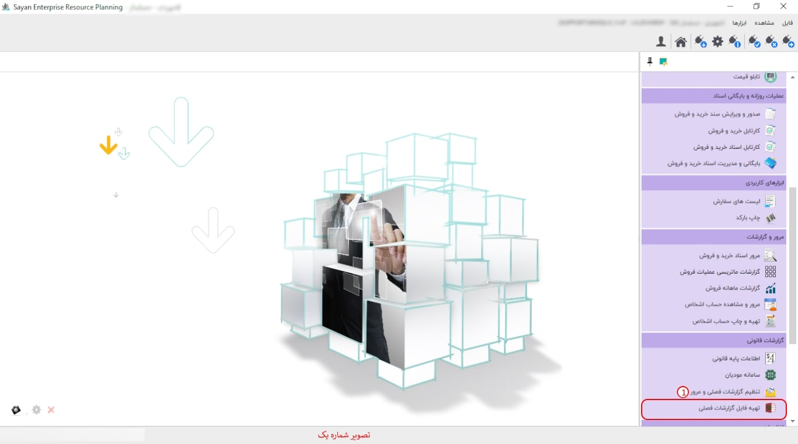
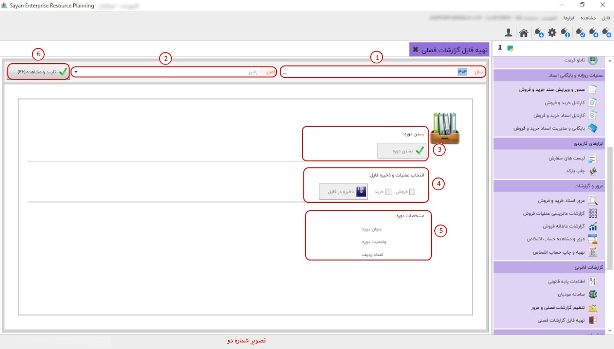

در این قسمت با توجه به تنظیماتی که انجام دادید می توانید گزارش فصلی خود را در قالب فایل تهیه نموده و به سامانه معاملات فصلی (169) ارسال کنید.
برای ادامه مطلب به تصویر شماره دو مراجعه نمایید.
-سال (کادرشماره یک) :در این قسمت سال مد نظر خود را وارد نمایید.
- فصل (کادر شماره دو):در این بخش می بایست فصل مورد نیاز خود را انتخاب نمایید.
-بستن دوره (کادر شماره سه):بعد از انتخاب تمام فاکتور های مد نظر برای ایجاد فایل نیاز هست با زدن گزینه بستن دوره آمادگی خود را جهت تهیه فایل اعلام نمایید.
-بستن دوره (کادر شماره سه):بعد از انتخاب تمام فاکتور های مد نظر برای ایجاد فایل نیاز هست با زدن گزینه بستن دوره آمادگی خود را جهت تهیه فایل اعلام نمایید.
-انتخاب عملیات و ذخیره فایل (کادر شماره چهار):زمانی که بستن دوره را انتخاب می کنید اجازه دارید از بین گزینه های خرید و فروش؛ خرید، فروش و یا هر دو عملیات را انتخاب کرده و با زدن گزینه ذخیره فایل ، فایل مربوط به آن دوره را در مسیری که مشخص می کنید ذخیره کنید.
- مشخصات دوره (کادر شماره پنج):قسمت مشخصات دوره، وضعیت فصلی دوره شما را نمایش می دهد که کدام دوره را انتخاب کردید و دوره در حالت بسته شده است یا باز و تعداد ردیفی که در این دوره تعریف کرده اید چند ردیف است.
-تایید و مشاهده f6 (کادر شماره ششم): مانند قسمت های دیگر نرم افزار این گزینه وقتی در حالت تایید و مشاهده است، شما می توانید سال و فصل خود را انتخاب کنید و وقتی در زمان تنظیم دوره است می توانید دوره را ببندید و فایل ذخیره کنید یا باز کنید.